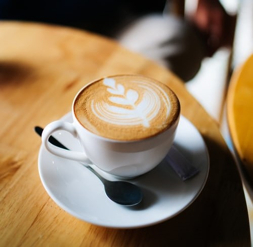
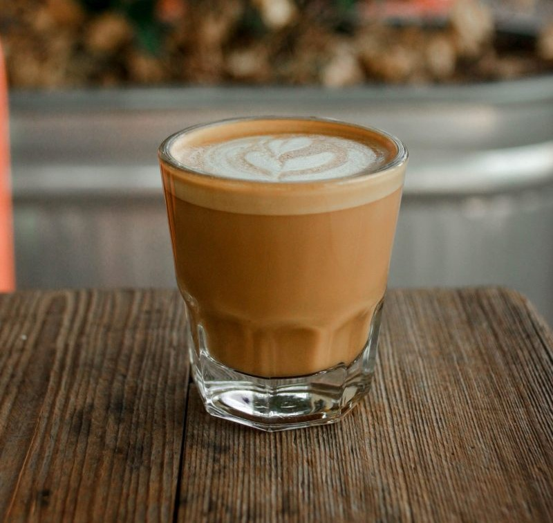
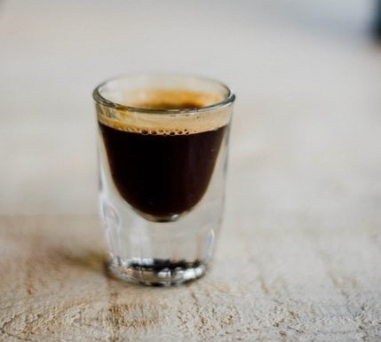

Cappuccino
Cappuccino is an espresso-based coffee drink, is a latte made with more foam than steamed milk, often with a sprinkle of chocolate
powder or cinnamon on top
Read More

Americano
Americano is a type of coffee drink prepared by diluting an espresso with hot water, giving it a
similar strength to, but different flavor from, traditionally brewed coffee
Read More

Espresso
Espresso is a coffee-brewing method of Italian origin. A double shot of espresso, the doppio is
perfect for putting extra pep in your step.
Read More

Macchiato
The macchiato is another espresso-based drink that has a small amount of foam on top. It's the
happy medium between a cappuccino and a doppio
Read More

Cortado
Cortado is the perfect balance of espresso and warm steamed milk. The milk is used to cut back
on the espresso's acidity. The milk in a cortado is steamed
Read More

Ristretto
Ristretto is a "short shot" of a more highly concentrated espresso coffee. It is made with the
same amount of ground coffee, but extracted with a finer grind
Read More